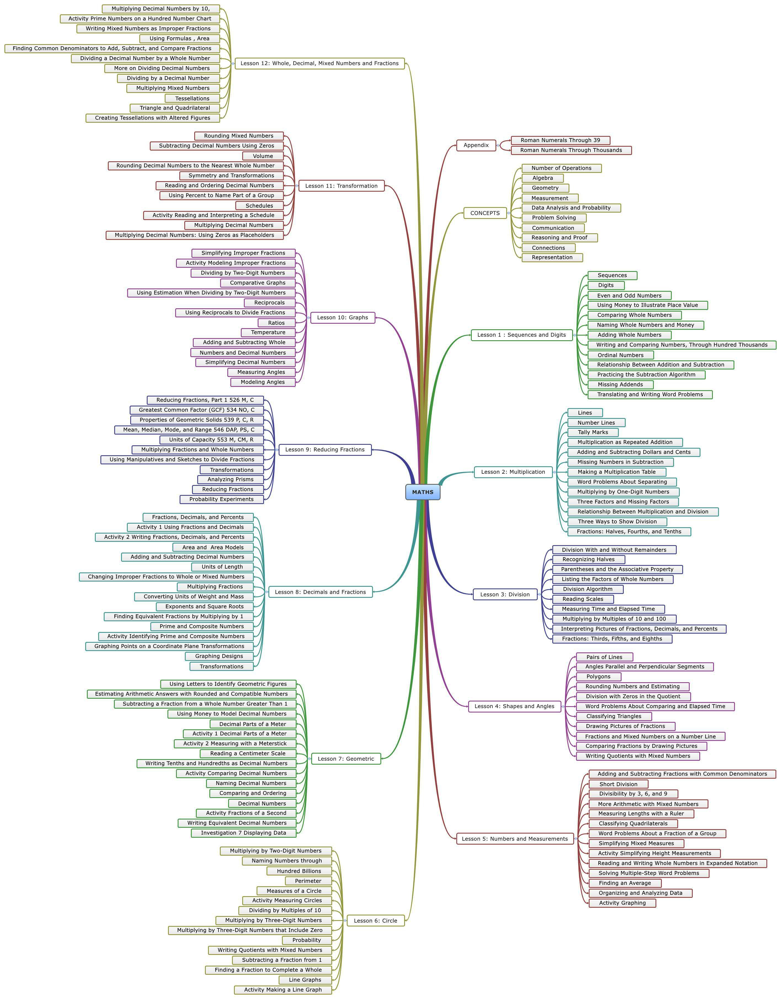

MATHS
- MATHS
- CONCEPTS
- Number of Operations
- Algebra
- Geometry
- Measurement
- Data Analysis and Probability
- Problem Solving
- Communication
- Reasoning and Proof
- Connections
- Representation
- Lesson 1
: Sequences and Digits
- Sequences
- Digits
- Even and Odd Numbers
- Using Money to Illustrate Place Value
- Comparing Whole Numbers
- Naming Whole Numbers and Money
- Adding Whole Numbers
- Writing and Comparing Numbers, Through Hundred Thousands
- Ordinal Numbers
- Relationship Between Addition and Subtraction
- Practicing the Subtraction Algorithm
- Missing Addends
- Translating and Writing Word Problems
- Lesson 2: Multipliaction
- Lines
- Number Lines
- Tally Marks
- Multiplication as Repeated Addition
- Adding and Subtracting Dollars and Cents
- Missing Numbers in Subtraction
- Making a Multiplication Table
- Word Problems About Separating
- Multiplying by One-Digit Numbers
- Three Factors and Missing Factors
- Relationship Between Multiplication and Division
- Three Ways to Show Division
- Fractions: Halves, Fourths, and Tenths
- Lesson 3: Division
- Division With and Without Remainders
- Recognizing Halves
- Parentheses and the Associative Property
- Listing the Factors of Whole Numbers
- Division Algorithm
- Reading Scales
- Measuring Time and Elapsed Time
- Multiplying by Multiples of 10 and 100
- Interpreting Pictures of Fractions, Decimals, and Percents
- Fractions: Thirds, Fifths, and Eighths
- Lesson 4: Shapes and Angles
- Pairs of Lines
- Angles Parallel and Perpendicular Segments
- Polygons
- Rounding Numbers and Estimating
- Division with Zeros in the Quotient
- Word Problems About Comparing and Elapsed Time
- Classifying Triangles
- Drawing Pictures of Fractions
- Fractions and Mixed Numbers on a Number Line
- Comparing Fractions by Drawing Pictures
- Writing Quotients with Mixed Numbers
- Lesson 5: Numbers and Measurements
- Adding and Subtracting Fractions with Common Denominators
- Short Division
- Divisibility by 3, 6, and 9
- More Arithmetic with Mixed Numbers
- Measuring Lengths with a Ruler
- Classifying Quadrilaterals
- Word Problems About a Fraction of a Group
- Simplifying Mixed Measures
- Activity Simplifying Height Measurements
- Reading and Writing Whole Numbers in Expanded Notation
- Solving Multiple-Step Word Problems
- Finding an Average
- Organizing and Analyzing Data
- Activity Graphing
- Lesson 6: Circle
- Multiplying by Two-Digit Numbers
- Naming Numbers through
- Hundred Billions
- Perimeter
- Measures of a Circle
- Activity Measuring Circles
- Dividing by Multiples of 10
- Multiplying by Three-Digit Numbers
- Multiplying by Three-Digit Numbers that Include Zero
- Probability
- Writing Quotients with Mixed Numbers
- Subtracting a Fraction from 1
- Finding a Fraction to Complete a Whole
- Line Graphs
- Activity Making a Line Graph
- Lesson 7: Geometric
- Using Letters to Identify Geometric Figures
- Estimating Arithmetic Answers with Rounded and Compatible Numbers
- Subtracting a Fraction from a Whole Number Greater Than 1
- Using Money to Model Decimal Numbers
- Decimal Parts of a Meter
- Activity 1 Decimal Parts of a Meter
- Activity 2 Measuring with a Meterstick
- Reading a Centimeter Scale
- Writing Tenths and Hundredths as Decimal Numbers
- Activity Comparing Decimal Numbers
- Naming Decimal Numbers
- Comparing and Ordering
- Decimal Numbers
- Activity Fractions of a Second
- Writing Equivalent Decimal Numbers
- Investigation 7 Displaying Data
- Lesson 8: Decimals and Fractions
- Fractions, Decimals, and Percents
- Activity 1 Using Fractions and Decimals
- Activity 2 Writing Fractions, Decimals, and Percents
- Area and Area Models
- Adding and Subtracting Decimal Numbers
- Units of Length
- Changing Improper Fractions to Whole or Mixed Numbers
- Multiplying Fractions
- Converting Units of Weight and Mass
- Exponents and Square Roots
- Finding Equivalent Fractions by Multiplying by 1
- Prime and Composite Numbers
- Activity Identifying Prime and Composite Numbers
- Graphing Points on a Coordinate Plane Transformations
- Graphing Designs
- Transformations
- Lesson 9: Reducing Fractions
- Reducing Fractions, Part 1 526 M, C
- Greatest Common Factor (GCF) 534 NO, C
- Properties of Geometric Solids 539 P, C, R
- Mean, Median, Mode, and Range 546 DAP, PS, C
- Units of Capacity 553 M, CM, R
- Multiplying Fractions and Whole Numbers
- Using Manipulatives and Sketches to Divide Fractions
- Transformations
- Analyzing Prisms
- Reducing Fractions
- Probability Experiments
- Lesson 10: Graphs
- Simplifying Improper Fractions
- Activity Modeling Improper Fractions
- Dividing by Two-Digit Numbers
- Comparative Graphs
- Using Estimation When Dividing by Two-Digit Numbers
- Reciprocals
- Using Reciprocals to Divide Fractions
- Ratios
- Temperature
- Adding and Subtracting Whole
- Numbers and Decimal Numbers
- Simplifying Decimal Numbers
- Measuring Angles
- Modeling Angles
- Lesson 11: Transformation
- Rounding Mixed Numbers
- Subtracting Decimal Numbers Using Zeros
- Volume
- Rounding Decimal Numbers to the Nearest Whole Number
- Symmetry and Transformations
- Reading and Ordering Decimal Numbers
- Using Percent to Name Part of a Group
- Schedules
- Activity Reading and Interpreting a Schedule
- Multiplying Decimal Numbers
- Multiplying Decimal Numbers: Using Zeros as Placeholders
- Lesson 12: Whole, Decimal, Mixed Numbers and Fractions
- Multiplying Decimal Numbers by 10,
- Activity Prime Numbers on a Hundred Number Chart
- Writing Mixed Numbers as Improper Fractions
- Using Formulas , Area
- Finding Common Denominators to Add, Subtract, and Compare Fractions
- Dividing a Decimal Number by a Whole Number
- More on Dividing Decimal Numbers
- Dividing by a Decimal Number
- Multiplying Mixed Numbers
- Tessellations
- Triangle and Quadrilateral
- Creating Tessellations with Altered Figures
- Appendix
- Roman Numerals Through 39
- Roman Numerals Through Thousands
